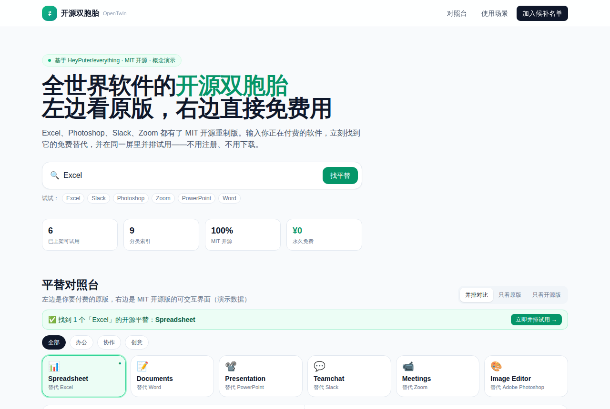

全世界商业软件都要有开源平替了？
HeyPuter/everything · 效率工具MIT⭐ 3,871

它是什么：HeyPuter/everything 是 HeyPuter 团队发起的一个“重造全世界软件”的开源项目，想把 Excel、Word、Slack、Zoom、Photoshop 等商业软件，用 MIT 协议从头做出免费开源版，所有应用都放在同一个仓库里维护。
为什么最近火：README 里列出的对照表覆盖面很宽，从 Office、协作、创意工具到工程、财务、小游戏都有，每个应用都给了 Try it 在线体验链接，上手门槛低。加上“全部 MIT、全部免费”这个说法本身很适合传播，每天新增约 300 星。
产品机会在哪里：单个应用成熟度还不好判断，直接在里面挑一个做商业产品风险不小。更适合的机会是往“入口”方向做：比如做一个“商业软件开源平替”导航站，按原软件分类索引（Excel 的平替、PS 的平替……），每个条目给在线试用、GitHub 源码、成熟度测评和迁移笔记。目标不是再造软件，而是帮预算敏感的人快速找到可上手的替代品。相当于做“替代品版 Product Hunt”。
今日 Top 5
| # | 项目 | 传播 | 创业 | 综合 |
|---|---|---|---|---|
| 1 | HeyPuter/everything | 8.33 | 6.6 | 7.42 |
| 2 | rddmwmddr/android-ad-cleaner | 8.0 | 6.65 | 7.03 |
| 3 | designfuchen/word-atlas | 7.67 | 5.35 | 6.88 |
| 4 | seedds/nxnative | 8.67 | 5.9 | 6.86 |
| 5 | TauricResearch/TradingAgents | 8.33 | 6.85 | 6.84 |